Tải về
Làm sao để tải về?
- Ấn vào nút Tải về ở trên cùng màn hình
- Trang sẽ tự động chuyển đến giao diện như hình (click vào hình để xem rõ hơn)
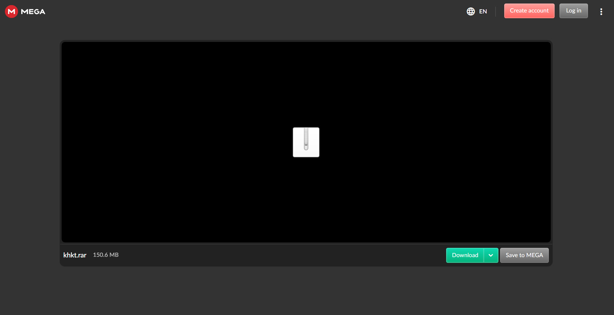
- Bấm vào nút download (màu xanh lục)
- Sau khi thanh màu xanh lục chạy xong sẽ ra giao diện như hình
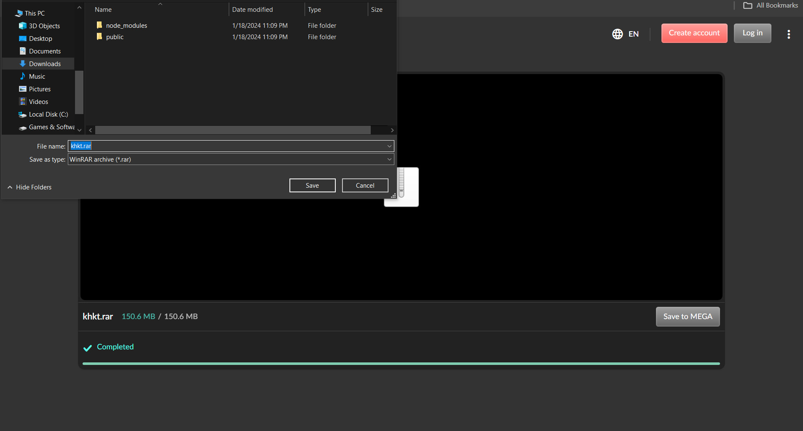
- Chọn nơi lưu trữ file rồi bấm Save (góc dưới bên phải)
- Mở lại nơi lưu trữ rồi click chuột phải vào file vừa tải, chọn extract to + tên file
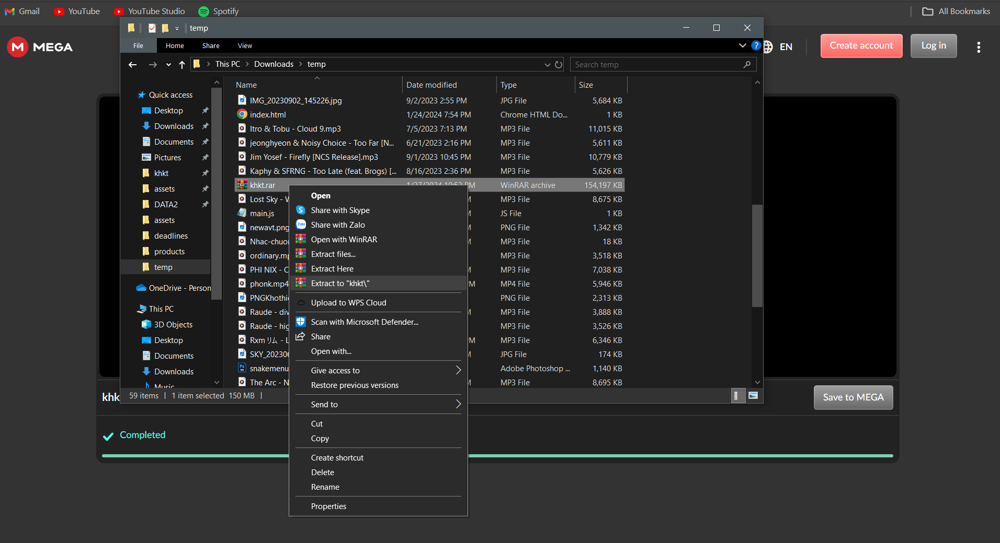
- Chờ đợi
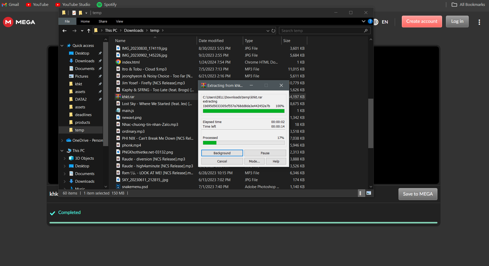
- File sau khi giải nén
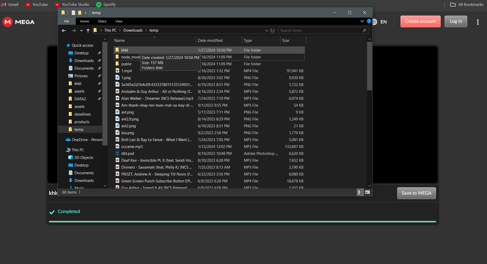
- Mở thư mục ra và chọn file index.html để chạy
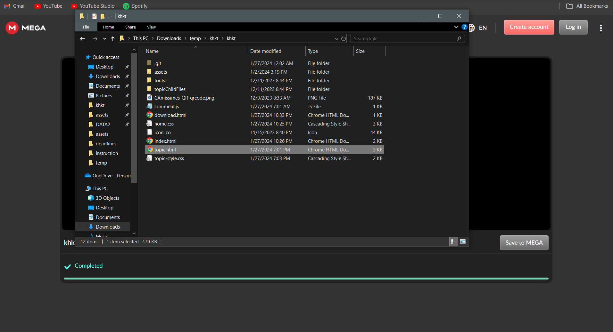
- Ngoài ra có thể tạo Shortcut để truy cập nhanh hơn
- Ra màn hình chính, click chuột phải chọn New rồi chọn Shortcut
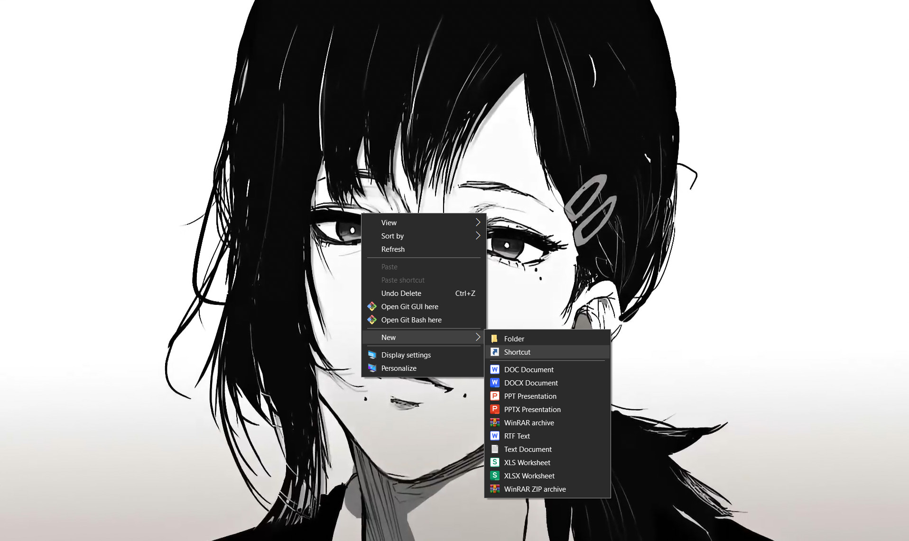
- Chọn Browse
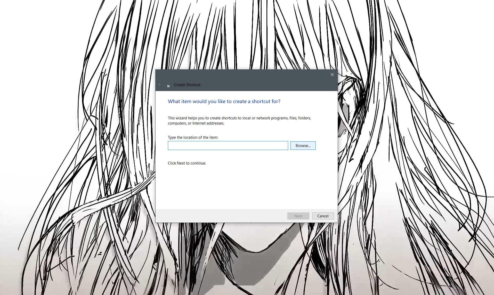
- Tìm file index.html trong folder vừa giải nén
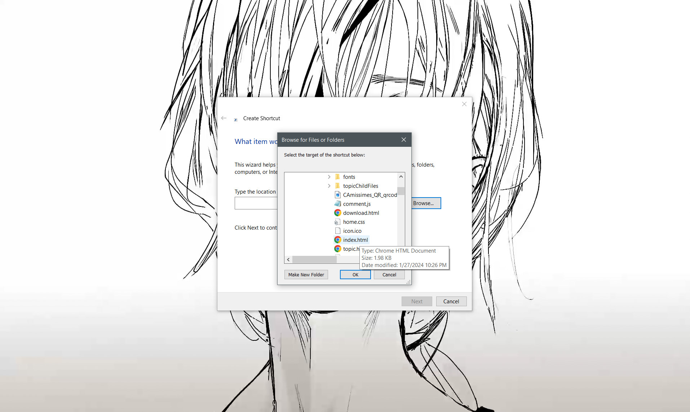
- Chọn next
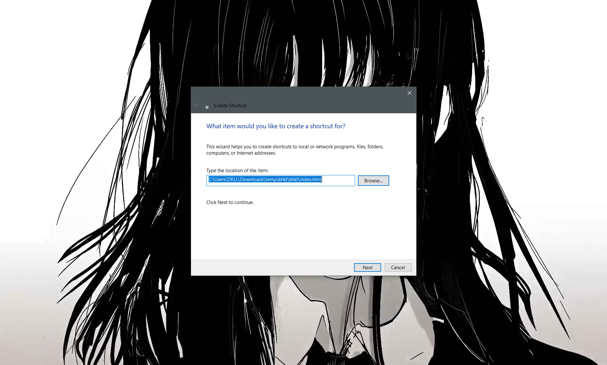
- Đổi tên index.html thành CAmissimes rồi nhấn Finish

- Sau khi đã tạo xong, chuột phải vào shortcut vừa tạo rồi chọn Properties
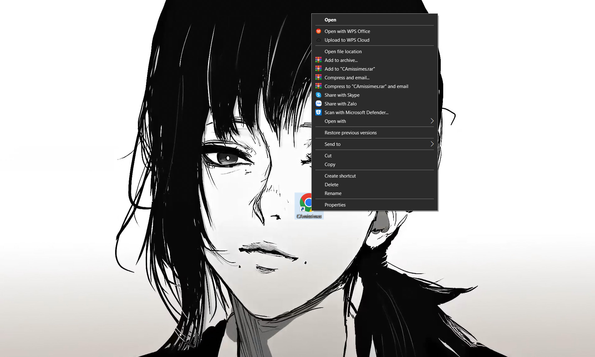
- Chọn Change shortcut icon
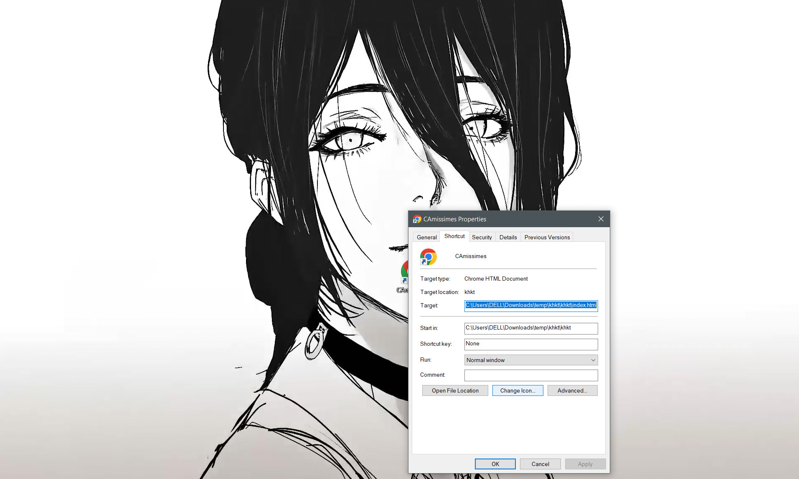
- Bấm Browse rồi tìm vào thư mục vừa giải nén, tìm file icon.ico
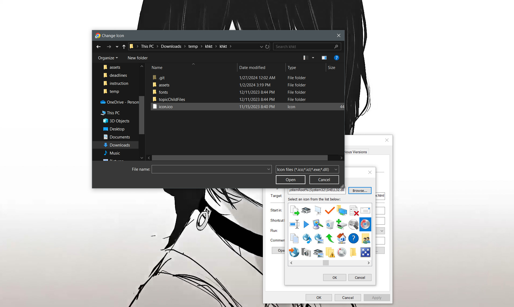
- Chọn Open rồi OK rồi chọn Apply rồi chọn OK lần nữa
- Hoàn thành!
- Từ giờ trở đi, có thể truy cập nhanh chóng bằng cách nháy đúp chuột vào shortcut vừa tạo